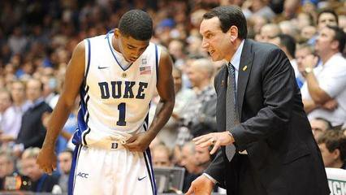

凯里·欧文（Kyrie Irving）
凯里·欧文（Kyrie Irving），1992年3月23日出生于澳大利亚墨尔本，拥有美国/澳大利亚双重国籍，职业篮球运动员，司职控球后卫，效力于NBA克里夫兰骑士队.
高中时期
凯里·欧文高一和高二就读于蒙特 凯里·欧文 凯里·欧文 克莱尔·金伯利私立高中，两个学年场均可得26.5分、10.3个篮板、4.8次助攻和3.6次抢断，成为校队历史上第一位个人得分超过1000分的球员。之后欧文转学至圣帕特里克高中，高四学年场均可得24.5分、5.0个篮板、6.5次助攻和1.6个抢断。 凯里·欧文参加了2010年麦当劳全明星赛，得到13分、2篮板、2助攻和3次抢断。随后欧文又参加了2010年乔丹精英赛，得到全队最高的22分和7次助攻，此外还有3个篮板和1次抢断，他和哈里森·巴恩斯共享了乔丹精英赛最有价值球员的称号。 高四时凯里·欧文当选佳得乐（Gatorade）新泽西州最佳球员，被《Parade》杂志和《Slam》杂志评为全美第一阵容成员，入围奈史密斯年度高中球员最终名单。被著名大学/高中篮球网站列为2010级大学新人第二位，在ESPNU的新生榜单中排在第三，雅虎的则将他排在第四位。
大学时期
凯里·欧文于2009年10月22日决定加盟杜克大学，当时ESPNU频道曾就此进行了现场直播。 2010年11月23日，在杜克与堪萨斯州立大学野猫队的比赛中，欧文得到17分、6篮板和5助攻，并在防守端很好地限制了堪萨斯州大的第一得分手雅各布·普伦，导致后者全场12投仅1中。 2010年12月1日，在NCAA焦点之战——杜克大学和密歇根州立大学斯巴达的比赛中，欧文12投8中，砍下全场最高的31分，带领球队战胜对手，这也是杜克校史上新人得分第二高，仅次于J.J.雷迪克在2003年得到的34分。 2010年12月10日，在杜克大学对阵巴特勒大学的比赛中，欧文右脚趾韧带受伤。由于伤情较重，杜克大学主帅迈克·沙舍夫斯基表示凯里·欧文可能会赛季报销。摆在欧文面前的只有两条路——参加NBA选秀，或是申请红衫球员资格。 2011年2月4日，凯里·欧文受伤两个月后，脱掉了右脚保护靴。 2011年3月18日，凯里·欧文火线复出，上场20分钟拿下14分4篮板，帮助球队以87-45击败汉普顿。 2011年3月24日，在NCAA甜蜜16强比赛中，卫冕冠军杜克大学负于亚利桑那大学，欧文出场31分钟，得到28分和3次助攻。 2010-11赛季，凯里·欧文因脚趾伤势缺席了大部分的比赛，在出场的11场比赛中，场均17.5分3.4板4.3助攻，两分球命中率为59%，三分球的命中率也有45%。 2011年4月7日，凯里·欧文宣布参加2011年NBA选秀
凯里·欧文是一名纯粹的控球后卫,具备了场上的指挥力和控制运转球队的素质，速度极快，这使防守他的对手在一对一的情况下很难完全限制住他；控球技巧非常出色，左右手都能突破，几乎没有投篮短板。 进攻：欧文是将控球和投篮结合最好的球员之一，擅长利用控球变向，结合身体假动作晃开对手，突破脚步变化很实用，可以左右手在禁区完成终结，喜欢拉杆换手上篮。欧文的投篮准星不俗（曾拿过三分大赛冠军），这就使得他成为单打独斗的好手。 防守：欧文的防守一直被人诟病，他的身体力量不够，运动天赋也不算顶级，最糟糕的是防守积极性很差。